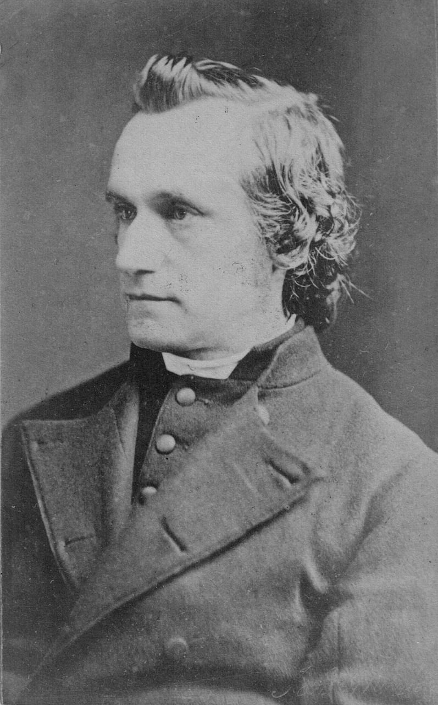

We know that Baldwin Hingston moved to the extreme west of Cornwall around the time of the English Civil War; his will shows that there was a definite link to the Holbeton Hingstons in Tree HD, but the details are not fully resolved. Precisely when he moved, and why, is not known. The area he moved to is known as the Penwith peninsula; it is the most westerly of the chain of granite intrusions on the mainland of Britain which include Dartmoor in Devon and Bodmin Moor in east Cornwall, as well as the Scilly Isles in the sea to the west. The geography has probably had a significant influence on the family; around the edge of the granite there are deposits of the ores of many metals, most importantly tin, which was mined in the bronze age. There are also deposits of copper, lead, zinc and silver. The uplands were once forested but the trees were cut down in prehistoric times to smelt the ore, which has left the higher ground with thin, barren soil that is exposed to the south westerly gales that sweep in from the Atlantic. The cliffs are steep and the only harbours of any size are St Ives in the north and Newlyn and Penzance in the south. These face eastwards but still rely on their breakwaters for shelter. To the east of the high ground there is a much more fertile lowland region that stretches from St. Ives to Penzance.
Baldwin, was described as a Gentleman, of Ludgvan (GenUKImap), which is a village in the fertile valley, but he lived at Boswase (GenUKI map) which is on the much higher ground, although still within Ludgvan parish. There was some connection to the tiny village of Morvah on the NW corner of the peninsula but this may be where his wife or daughter-in-law came from; there is no evidence that he lived there. Within a couple of generations they are described as being of Amalwhiddon (GenUKImap), which is in the parish of Towednack (GenUKImap); it is several miles up the valley from Ludgvan village but the boundary of the parish is only about half a mile from Amalwhiddon. There are two farms at Amalwhiddon; the higher one up on the fairly barren land and the lower one in a more sheltered location. It isn't clear which one was owned by the Hingstons and it isn't clear why they moved from Ludgvan. Were they involved in mining? There are several old mine shafts in this part of Ludgvan parish and many more a short distance away in other parishes.
There are many old mines and mine shafts close to Amalwhiddon and the industry was typically one of "boom or bust". The lodes in Cornwall are only a few inches thick, nearly vertical and surrounded by granite, so they were very difficult to mine, especially before the invention of safe explosives. In addition, as the mines became deeper they flooded, and had to be pumped out by whims, which were capstans powered by horses, raising and lowering buckets. It is no surprise that the first steam engines were developed by Newcomen for pumping out Cornish mines and allowed the miners to follow the lodes ever deeper. There was a boom in the industry as each new technology was invented, but then a bust when there was an economic downturn or when more accessible deposits were found elsewhere in the world.
According to family legend, Thomas Hingston frittered away what remained of the family money and they appear to have lost Amalwhiddon. Did he invest unwisely in mines? If possible, we need to establish which of the Amalwhiddon farms they occupied, and how these fit in with the mining history of the area.
The later members of the family are described as being from St Ives, initially as merchants or sea Captains, but later with a variety of trades and some of them clearly quite poor.
There are three christian names that appear commonly within this family, but only rarely elsewhere. One is Baldwin, which we can understand as the founder of the family, at least in this area. The second is Malachi, which runs through three generations; the earliest reference is to Malachi Angwin who was a friend of Baldwin. Finally, we have the name Francis, which starts to appear in the late 17th century but then appears in most generations.
There is a line of Hingstons in Lyme Regis, which are reputed to be linked with this tree; they are listed below and are numbered as though they are part of the tree, but we don't yet know where they fit in. I believe the Lyme Regis line has some gaps in it and may not be correct.
Some of the information in this tree has been supplied by David Teague <dteague@primex.co.uk> based on work done John Higgans. I have copied their work, with permission, and tried to relate it to the work of WEH, who was certainly in touch with some members of these families, and I have also been correlating the pages with the records on the Cornwall OPC site. There is a web site that deals with Penwith History and Genealogy which may be of interest to those related to this Tree.
Baldwin Hingstons's will is listed in MISC. CORNISH WILL AND ADMINISTRATION ABSTRACTS 1602 through 1816, from which we find:-
Written: 30 Apr 1661 proved: 23 May 1664
This is an important document since it gives a link between the Holbeton Hingstons and the first Hingstons we know of in Cornwall. It shows that Baldwin had a brother William, living at Newton Ferris (Newton Ferrers) in Devon, who had a son Baldwin. Baldwin also had a kinsman William, living at Plymouth (presumably not his brother). This Baldwin had a son John, who was born after 1640.
Baldwin is probably related to, or may even be the same person as, the Baldwin listed at the start of the Allen and Dymond tree, as being registered at Holbeton, and doubtless belonging to the Family (i.e. the Tree we list as at this site as Tree HD), but their connection has not been traced.
In a letter to WEH, 17. Francis Charles Hingeston Randolph wrote:- "The earliest notice I have of the family in West Cornwall is contained in a memorandum by my father. They lived at Amalwidden (GenUKImap) in the Parish of Towednack (GenUKImap). Baldwin Hingston was married, in the adjacent Parish of Morvah, 1 April 1650, to Mary Hammond. He is said to have migrated thither from Holbeton. I have never looked him up, but Baldwin is not a common name, and you may find him when get your Holbeton extracts. Miss Hammond is said, by a tradition in the family, to have been a daughter, or other near relative, of the well known Parliamentary Col. Hammond, who was at one time quartered at St Ives. I believe his brother was John. At any rate John was the head of the family at Amalwidden at the time of the Restoration, or soon after. Thomas was the last at Amalwidden; he was extravagant and wasted nearly all his substance. His only son was Malachi, my great grandfather." Note that this does not match up in all details with what is shown here but the gist appears to be correct.
They had the following children:
They had one child:
They had the following children:
They had the following children:
They had the following children:
They had the following children:
They had the following children:
7. MALACHI HINGSTON. Baptized in Towednack on 8 Aug 1731, the son of 4. Thomas Hingston and Grace (Thomas). On 16 Jun 1755 when Malachi was 24, he married MARY ROSE in St. Ives; she was the widow of Francis Rose but had been born MARY RICHARDS, in Penzance, 1728. Her father was John Richards, and her mother Margery Branwell. Margery Branwell had a brother Richard, whose granddaughter was Maria Branwell, the wife of Patrick Bronte, 1777-1861, and the mother of the Bronte sisters. Mary died in 1789, she was 61.
They had the following children:
They had the following children:
They had the following children:
They had the following children:
They had the following children:
They had the following children:
Francis Hingston (1796-1841) was controller of customs at Truro and reputedly belonged to a family long settled in St. Ives. According to his son's entry in the DNB, Francis married JANE MATILDA WILSON KIRKNESS, daughter of Captain William Kirkness on 5 Aug 1828. According to Boase she was born in London in 1804 the daughter of Capt W. Kirkness who married Jane Sanders at Falmouth 3 November 1803. In the register he is described as 'of London'. He was the son of John Kirkness of Orkney Island who settled in London. William was in command of a ship captured by the French but which he recovered and brought into Falmouth. Jane was buried 18 May 1886, aged 82, at Ringmore where her son was Rector.
Francis and Jane had at least two children:-
Deborah Hyland, of St Louis University, is doing a PhD disseration on Tristan legends in the nineteenth century and has found a book-length poem by Thomas Hogg, Master of the Grammar School in Truro, called "The Fabulous History of the Ancient Kingdom of Cornwall" (1827). Hogg includes a song about the Tristan legend and in his notes, he writes that "The song is the composition of FRANCIS HINGSTON, ESQ. ST.. IVES. The following is the original:--" and then he gives 12 lines in French. She assumes that Hingston wrote the song in French and Hogg translated it in his own poem, crediting Hingston. The song is only a small part of the whole poem - it appears on p. 353 - with the note about it on p. 501.
The Tristan and Isolde Legend is described at the University of Rochester Camelot project web site.
Pigot's directory of 1830 for St Ives lists Mr Francis Hingston, Custom House Clerk and a Francis Hingston, fish curer and seine owner; presumably they were two different persons unless the latter was a fish curer on the side! This is not impossible since he may have had a controlling interest in a fishing business. There is the problem that Customs Officers rarely served in their own towns, for fear of collusion so there is the possibility that there were in fact two Francis Hingstons. A study of Customs records may be beneficial. It may be that he had a fairly menial job initially in St Ives but was then promoted into the Truro post.
15. MALACHI HINGSTON. Malachi was born 5 Nov 1803 but not baptized until more than two years later in St. Ives on 11 Feb 1806, the son of 11. Malachi Hingston and Sarah (Stevens). On 12 Nov 1826 when Malachi was 20, he married JUDITH SHUGG, in St. Ives. Judith was buried on 25 Apr 1837 at St. Ives (Cornwall FHS burial index 1813-37), aged 34 (so born c. 1803) possibly in childbirth. Malachi subsequently married SARAH THOMAS, of full age, father Thomas Thomas (sic),Tailor. Malachi was described as a widower and a shipwright. His wife is shown as Sarah in the 1841 census and Sally in the 1851 census; these are probably the same person since Sally can be a pet form of Sarah. Sarah had been born 25 Mar 1800, baptised three days later and died Jan 1877. In the 1841 census they were living at living at Chy an Dour, and in 1851 they were living at St. Andrews (both in St Ives). In both censuses, Malachi is decribed as a shipwright. In the 1861 Census Malachi and his wife Sarah were living at separate addresses; Sarah (aged 60) with her daughter Elizabeth (aged 19), a dressmaker. There appears to be no child named to carry on the Malachi tradition.
Ian Salmon <ansonfish@aol.com> is investigating the following report:-
Royal Cornwall Gazette, Oct 11th 1861 "An inquest was held before W Hichens, jun. Esq...deputy coroner, on Tuesday 8th inst..at St Ives, on the body of Malachi Hinston aged 69, Shipwright. Deceased had been suffering for some time from a disease of the heart and on Tuesday morning he arose early to go to his work, but feeling unwell he went to lie on his bed, desiring his daughter, with whom he lived to get him some tea which he drank, he then asked to some more, and she went downstairs to get it, but on her return he seemd worse, and on lifting him up in bed he died in her arms. Verdict..died from natural causes." This would imply a birth round about 1792, but the death certificate says that he died on 8 Aug 1861, aged 59. If the birthdate quoted above is correct he would actually have been 57.
The 1841 census returns are available at:- http://freepages.genealogy.rootsweb.com/~kayhin/ukocp.html
The children of Malachi and Judith were:
It seems slightly odd that Malachi had two daughters, both called Elizabeth, from his two marriages. and in the 1851 census there was a JAMES C HINKSTON, aged 3, described as son-in-law (which obviously had a different meaning then) of Daniel Mitchell (a butcher aged 22) and his wife Jane (age 24) living in Chapel St, St Ives.
29. ELIZABETH WESTCOTT HINGSTON. Baptized in St. Ives on 13 Apr 1789 to 13. John Hingston and his wife Elizabeth Harvey. She is probably the Betsy Hingston shown in the 1841 census, presumably unmarried. She seems to have gone away to Penzance to have a child. There was a Francis Cock born in St Ives, some ten years older than Elizabeth, so whether he was the father and she named the baby after him in the hope, or expectatation, that he would marry her is a possibility, but there is no mention in the records.
Child of Elizabeth Westcott Hingston was:-

FCH-R has entries in the DNB, Who’s Who and "Men and Women of the Time: A Dictionary of Contemporaries" from which the following has been assembled.
The only son of the late Francis Hingeston, St. Ives and Truro, and Jane, eldest daughter of William Kirkness, of Kernick. He was educated at the Truro Grammar School, and in 1851 went on to Exeter College, Oxford, as Elliott exhibitioner. He graduated B.A.in 1855 with an honorary fourth class in the final pass school, and proceeded M.A. in 1859. Ordained in 1856, he served as curate of Holywell, Oxford, until 1858, when he moved to Hampton Gay, in the same county, succeeding to the incumbency of the parish next year.
He developed antiquarian tastes early. At seventeen he published ‘Specimens of Ancient Cornish Crosses and Fonts’ (London and Truro, 4to, 1850). Much historical work followed, but his scholarship was called in question. In the ‘Rolls’ series he edited Capgrave’s ‘Chronicle’ (1858); Capgrave’s ‘Liber de Illustribus Henricis’ (1859), and ‘Royal and Historical Letters during the Reign of Henry the Fourth,’ vol. i. 1399-1404 (1860). The last volume was especially censured, and when Hingeston-Randolph had completed a second volume in 1864 collation of it by an expert with the original documents led to the cancelling and reprinting of sixty-two pages and the addmg of sixteen pages of errata. Two copies of the volume are in the British Museum, one in the revised form and the other in the original state. Of each version eight copies were preserved, but none was issued to the public. Francis did no further work on the Rolls series which may have been a financial embarrassment to him because he may have seen it as a source of continuing income. (see M. D. Knowles: Presidential Address: Great Historical Enterprises IV. The Rolls Series Transactions of the Royal Historical Society Vol. 11 (1961), pp. 137-159) The Rolls are the historical archive of the British Government and in 1857, the Master of the Rolls, Sir John Romilly, at the request of eminent historians like Joseph Stevenson decided to open up the Rolls for publication, with editors being appointed for each volume. Francis was made one of these editors, which may be explained by the fact that he was the accepted suitor of Stephenson's eldest daughter. Francis was a self-confident, naive, mercurial young man, and a tireless and copious correspondent. After the publication of the first two volumes, Francis jilted Stevenson's daughter in favour of MARTHA RANDOLPH, only daughter of Herbert Randolph, the incumbent of Melrose, Roxburghshire; he may have been expecting her to inherit considerable sums. After the marriage Francis added her surname to his at the request of her father and affected the Hingeston form of his own name, which he took to be the earlier form of the spelling of his family surname. Also in 1860 he became rector of Ringmore, near Kingsbridge, Devonshire (GenUKImap), the patronage to which living afterwards became vested in his family. He remained at Ringmore for the rest of his life. He was also appointed Domestic Chaplain to the Baroness le Despenser (Dowager Viscountess Falmouth) in 1859 and Rural Dean of Woodleigh, Devon, in 1879.
In 1885 Frederick Temple, then bishop of Exeter, made Hingeston-Randolph a prebendary of Exeter Cathedral, and at the bishop’s suggestion he began editing the ‘Episcopal Registers’ of the diocese. Between 1886 and 1909 he completed those of eight bishops of the thirteenth, fourteenth, and fifteenth centuries. He mainly restricted himself to indexing the contents of the registers, a method which limited the historical utility of his scheme. [‘The Register of Edmund de Stafford, Bishop of Exeter’, 1886; ‘The Constitution of the Cathedral Body of Exeter’, 1887; ‘The Registers of Вishops Bronescombe, Quivil, and Bytton (Bishops of Exeter)’, 1889 ; ‘The Register of Bishop Stapeldon’, 1892 ; ‘The Register of Bishop Grandiseon, Part I.’, 1894; Part II., 1897; Part III., 1899; ‘The Register of Bishop Brantyngham, Part I, 1901; Part II., 1904]
Hingeston-Randolph specially interested himself in church architecture, and was often consulted about the restoration of west country churches. He wrote ‘Architectural History of St. Germans Church, Cornwall’ (1903), and contributed many architectural articles to the ‘Building News’ and the ‘Ecclesiologist.’ For ten years (1879-90) he was rural dean of Woodleigh, and brought the work of the district to a high state of efficiency. In his articles ‘Up and down the Deanery,’ which he contributed to the ‘Salcombe Parish Magazine,’ he gave an interesting historical account of every parish under his charge. He died at Ringmore on 27 Aug. 1910, and was buried in the churchyard there. His wife predeceased him in 1904. He left four surviving sons and six daughters.
Francis Charles does not come over as a sympathetic character; his scholarship was called into question and he was described (within the family) as an old curmudgeon and ruled his parisioners with a firm hand, including doling out medical advice and medicine.
Francis and Martha had many children (all born at Ringmore Rectory):-
Sarah is probably the mother of
25. FRANCIS COCK HINGSTON. Baptised 23 May 1817 to 29. Betsy Westcott Hingston at Penzance Chapelry, Madron. When he married, by banns, on 23 Aug 1844 at St Ives, he was described as aged 27, bachelor mariner of St Ives. His bride was JANE COLEMAN aged 18 spinster of St Ives (father: John Coleman, mariner) witnesses: Richard Cogar Bryant, Thomas Williams. A few years later, at the birth of his son in 1847 he was described as a miner.
The children of Francis Cook Hingston and Jane (Coleman)
19. THOMAS HINGSTON was born in St Ives 28 Apr 1859 the son of 18. Sarah Hingston. No father is listed. The family story is that Thomas was illegitimate. He lived for some time before his death in 1930 in Ford Workhouse Plymouth. He married, on 1 Aug 1881 at Stoke Damerel, CAROLINE WOODLEY, born 1858. At the time of the wedding he showed his father as Malachi Hingston, which caused confusion for some time, but it was common for illegitimate children to show the name of a grandfather when asked for their father's name.
Thomas Hingston and Caroline Woodley had two children
26. FRANCIS COCK HINGSTON was baptised 12 Dec 1847 at St Ives, the son of 25. Francis Cock Hingston and his wife Jane. His father was described as a miner. According to his (26. Francis) Death Certificate he was an Insurance Agent. He died 17 Sep 1922 at 52 Oroya St, Boulder, Western Australia.
It is not known when he emigrated to Australia but he was certainly there when he married at Sofala (a gold-rush town near Parkes, NSW) in 1874. They lived in Parkes until about 1880/81 when they moved to Cobar, also NSW. This was a copper mining town and largely popultaed by Cornish miners. They lived there until sometime between 1882 and 1885 when they lived in Port Adelaide, South Australia. After PA they moved to Broken Hill where his first wife Margaret died. At some point Francis remarried and they moved to Western Australia sometime between 1895 and 1905, as Edna, the only surviving child of the second marriage was born in Boulder in 1905. Most of these dates come from the dates of birth of their children.
On 22 Apr 1880 The Sydney Morning Herald reported that Francis was one of the men who had been appointed to the Public School Board at Parkesborough, just south of Parkes in NSW.
In 1888 it was reported in an Adelaide Newspaper that Francis had been appointed as an officer of the Port Adelaide Masonic Unity Lodge and it is known that he remained a member of the Freemasons for the rest of his life.
He married, firstly, SARAH JANE ALLEN (but known as MARGARET SARAH) on 22 Sep 1874 at the Wesleyan Parsonage, Currajong (which was the original name for Parkes), New South Wales. She had been born at Sofala 13 Oct 1854 to Duke Thomas Allen, a miner, and Margaret Sarah (Meredith). Sofala is a small town north of Bathurst that was founded in the goldrush of 1851. Francis gave his residence as McGuigans Lead and his occupations as miner, and stated that his father Francis was deceased. The witnesses were Samuel Crags and Maria Ann Allen. Margaret died 7 Jul 1895 at Oxide St, Broken Hill, NSW of Congestive apoplexy and nephritis, complicated by pregnancy. The death certificate listed four living children (Robert, Gertrude, Florence and Clarence, but not Elizabeth, plus 3 males deceased and 2 females deceased.)
Peter McGuigan and his party found a worthwhile lead in the area later called McGuigan's on 8 March 1874. It was so rich that it drew miners back from as far afield as the Palmer River in Queensland. Not only was it a major strike which won very high yields, it also gave a spurt to further prospecting in the area which turned up more gold. A township quickly arose nearby, with a post office, hotels, store, saloons, chemists and photographers. A Post Office opened on 1 December 1874 but closed on March 1876. The township site was completely abandoned. (L A Unger, The Town That Disappeared (The Story of McGuigans 1874-76), Parkes & District Historical Society)
He married, secondly, MARGARET MITCHELL (in about 1892 in Adelaide, South Australia); she had formerly been married to a McFarlane. She died by drowning at South Beach, Fremantle on 9 Dec 1922, aged 57. She had been born in Cornwall and her father was Joseph Mitchell, a farmer. Her death certificate implies that she married Francis in about 1902 in Perth.
The children of Francis Cook Hingston and Margaret Sarah were
The children of Francis Cock Hingston and Margaret Mitchell included:-
27. ROBERT HENRY HINGSTON born 20 Jul 1875 at Parkes NSW, the son of 26. Francis Cock Hingston and his first wife Margaret Sarah. Robert Henry Hingston enlisted in the army under a false name Robert Allan Hunter. Anecdotaly Hunter is said to be his mothers maiden name but that is still unverified. He had previously tried to enlist under his own name but was told he was too old so he entered under the false name. His next of Kin was given as Brother Leslie Hunter, Rundle Street Adelaide. no verification as at 6 Feb 2016 as to whether this is fictitious. His date of embarkation was 29 Dec 1917 where he was part of 51 infantry Battalion - 2 to 11 Reinforcements. He embarked from Fremantle Western Austalia on the HMAT Miltaides A28. His service number was 3388 and, according to his Attestation paper was 43 years old, but this is also in doubt. On 3 Aug 1919 he married BESSIE BRISTOW BURROWS at her father's residence in Boulder. She was born 27 Oct 1891 at Mildura, Victoria, the daughter of Thomas Robert Burrows, a plumber, and Emily Susannah (Brooks). Robert was described as a contractor, of Carnarvon. The witnesses were Irene A Burrows and Somerville Brown. Robert died 3 Apr 1951 at 23 Ward St, Kalgoorlie, Western Australia; he was described as a storekeeper. Bessie died 17 Jul 1966 at 6 Saggers Drive, Bentley, Western Australia
The children of Robert Henry and Bessie Bristow Hingston were:-
28. CLARENCE LESLIE (LES) HINGSTON born 21 Nov 1887 Port Adelaide, the son of 26. Francis Cock Hingston and his first wife Margaret Sarah. He was a Miner. Married 4 Feb 1909 STELLA GRACE WOOD. He died 1932, Boulder Western Australia
The children of Clarence Leslie and Stella Grace Himgston were:-
20. WILLIAM HENRY HINGSTON (957 in WEH) He would have been born about 1750, possibly in St Ives. Left Cornwall and settled at Lyme Regis, a sea port on the borders of Devonshire and Dorsetshiret. He married a Miss SOUTHERN of Exeter, and left one son.
The only recorded child of William Henry Hingston and his wife is:
21. WILLIAM HENRY HINGSTON (958 in WEH) was the son of 20. William Henry Hingston. He married to MARY of Lyme Regis.
The children of William Hingston and Mary are:-
Note that Maria was probably born in 1781, while 22. George and 23. William seem to have been born about 1802, all according to the 1851 census records. Such a gap is possible but it is also possible that WEH got this data from family memories and there may be a generation missing.
22. GEORGE HINGESTON (961 in WEH) eldest son of 21. William Hingston and Mary, probably born about 1802 from age at census. He was a solicitor in Lyme Regis. Married 6 Sep 1843 (In Axminster District - FreeBMD) to HANNAH ROSE DARE of Ware. She died without issue, and he married secondly ELIZA ADNEY of Exeter (Jun Qtr 1847 in St Thomas District (which is the district surrounding Exeter but not the city itself), and by her had six children. In the 1851 Census the family are living at Broad St, Lyme Regis; George is described as age 49, Attorney and Town Clerk. Eliza is aged 26, born Halberton, and living with them is Henrietta Adney aged 17 of Halberton, presumably Eliza's sister, who is described as a Clergyman's daighter. George died in 1866.
The children of George Hingston and Eliza (with dates from FreeBMD) are:
23. WILLIAM HINGSTON (962 in WEH) son of 21. William Hingston and Mary. William married firstly HARRIETT JOHENE; the 1851 census shows William aged 49, a surgeon, married to Harriet J age 48 born in London, Middlesex, with an unmarried son aged 20. A Harriet Jane Hingeston died in Jun Qtr 1858 at Axminster. William married secondly Jun Qtr 1866 in Marylebone (London) LUCY LA BRETON, He died 24 April 1887 (Jun Qtr 1887 at Axminster, aged 87). WEH says that William had no children by his first wife but two by his second, but the records seem to show that he had this the wrong way round.
The children of William Hingston and Harriet were:
24. JOHN HINGSTON (963 in WEH)Youngest son of 21. William Hingston and Mary. Born in 1808. Was a solicitor at Lyme Regis. Married CAROLINE HILLMAN of the same place. John died 5 September 1839, and was spoken of very highly to WEH by his sister-in-law, Lucy La B Hingston. In the 1851 census Caroline is shown as a 45 year old widow, born in Wales at Sotenby (which I cannot identify) with her son John aged 14.
The only child of John Hingston and Caroline is:
Go to the Hingston One-Name Study Page
Updated 15th July 2020, C J Burgoyne
{kind=link}
{kind=link}